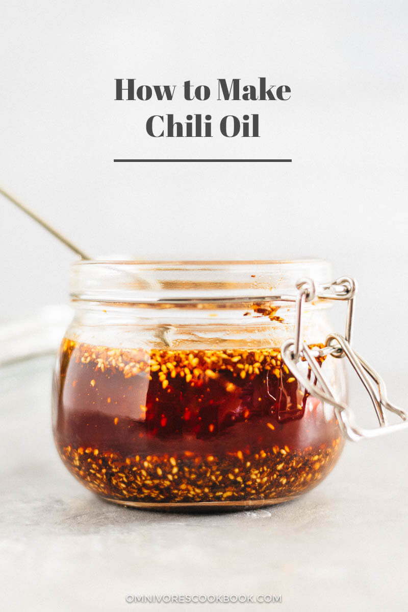

Homemade Chili Oil
Original Recipe from Omnivore's Cookbook:
How to Make Chili Oil (辣椒油)
Return to homepage

Description
Chili oil is such an important staple for Chinese families, equal to soy sauce and vinegar.
For many Chinese people chili oil is as important as ketchup is to American people.
It always shows up on tables of small diners, no matter whether it’s a dumplings or noodle place.
Once you’re hooked, you’ll want to pour it on everything.
Ingredients
- 4 tablespoons Chinese chili flakes (*footnote 1)
- 3 tablespoons toasted sesame seeds
- 1 teaspoon ground Sichuan peppercorn
- 1 whole star anise (Optional)
- 2 bay leaves
- 1 cup vegetable oil (or grapeseed oil)
- 1 piece thinly sliced ginger (Optional)
Steps
- Combine chili flakes, five spice powder, sesame seeds, star anise, Sichuan peppercorns, and bay leaves in a heatproof ceramic bowl
that can hold at least 2 cups liquid. Place the bowl on a heat resistant coaster.
- Heat oil in a wok (or a skillet) over medium-high heat. Add ginger. When the ginger starts to wither and turns golden brown,
immediately turn off the heat. The oil should reach 370 degrees F (190 C) and no higher than 400 F (200 C) if read with an instant thermometer.
- Carefully pour oil or use a ladle to transfer oil into the bowl of mixed spices. The oil will bubble for a few seconds
and cook the spices. While the the oil is bubbling, use a metal spoon to stir gently to mix the spices, so they’ll cook thoroughly.
- When the oil cools down a bit, scoop out and discard the star anise and bay leaf.
- The oil is now ready to use! Its flavor will mature if you let it rest for a day, allowing the spices to infuse into the oil.
- The oil can be stored covered at room temperature for two weeks, or up to six months in the fridge in an airtight container.